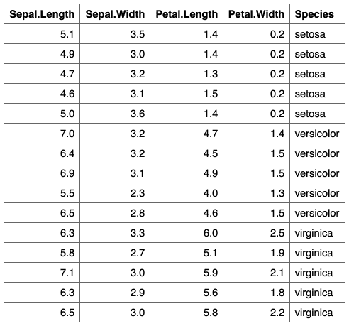
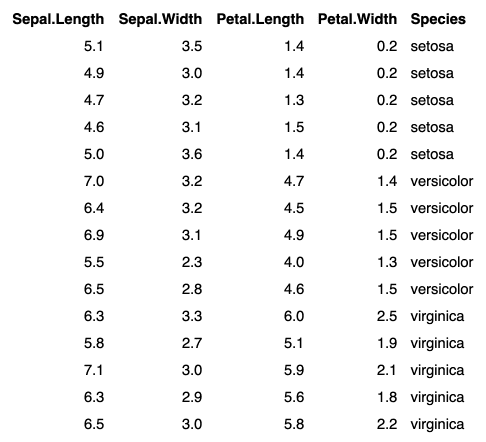

| border_remove {flextable} | R Documentation |
The function is deleting all borders of the flextable object.
border_remove(x)
x |
a flextable object |


Other borders management:
border_inner_h(),
border_inner_v(),
border_inner(),
border_outer(),
hline_bottom(),
hline_top(),
hline(),
surround(),
vline_left(),
vline_right(),
vline()
dat <- iris[c(1:5, 51:55, 101:105),] ft_1 <- flextable(dat) ft_1 <- theme_box(ft_1) ft_1 # remove all borders ft_2 <- border_remove(x = ft_1) ft_2